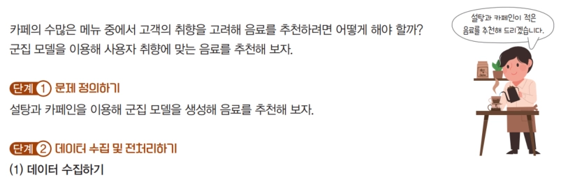
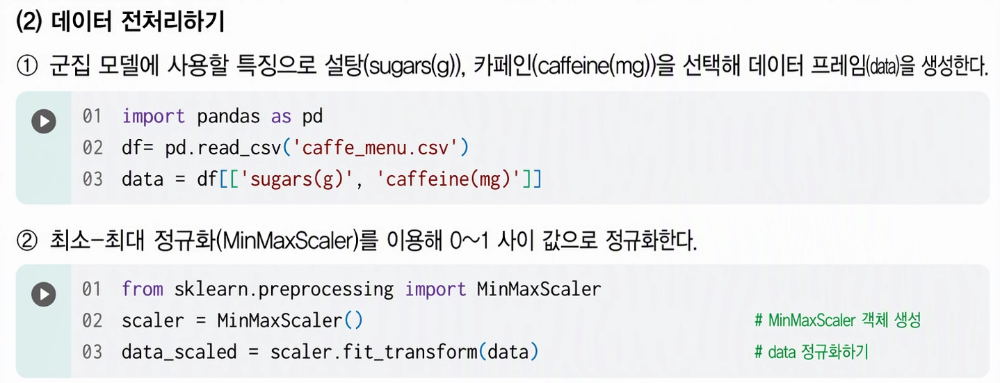
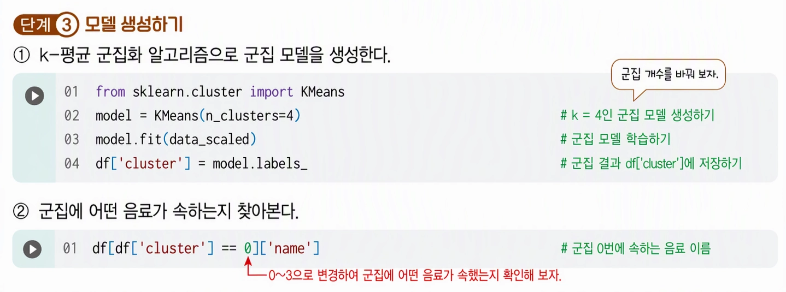

[16차시] 고객 취향의 음료 추천







[모델 적용]
① 군집별로 설탕과 카페인의 평균 계산


② 정규화된 공간에서의 군집 중심점 확인


| 군집 | sugars 수치 | caffeine 수치 | 상대적 당류 | 상대적 카페인 | 군집 특성 |
|---|---|---|---|---|---|
| 0 | 0.044007 | 0.254539 | 최하위 (매우 낮음) | 하위 (낮음) | Low 당류 / Low 카페인 음료 군집 |
| 1 | 0.581532 | 0.602574 | 최상위 (높음) | 최상위 (높음) | High 당류 / High 카페인 음료 군집 |
| 2 | 0.078187 | 0.604356 | 하위 (낮음) | 최상위 (높음) | Low 당류 / High 카페인 음료 군집 |
| 3 | 0.588434 | 0.178014 | 최상위 (높음) | 최하위 (매우 낮음) | High 당류 / Low 카페인 음료 군집 |
③ scatter plot으로 나타내기


④ 각 군집의 평균(mean) 확인
# 각 군집의 평균 확인
cluster_mean = df.groupby('cluster')[['sugars(g)', 'caffeine(mg)']].mean()
print(cluster_mean)
# 분석 결과에 따라 명명
# 0번: 설탕 높음/카페인 낮음 -> 'Sweet & Low Caffeine'
# 1번: 설탕 낮음/카페인 낮음 -> 'Light & Clean'
# 2번: 설탕 낮음/카페인 높음 -> 'High Caffeine'
# 3번: 설탕 높음/카페인 높음 -> 'Energy Bomb'
cluster_names = {
0: 'Sweet & Low Caffeine',
1: 'Light & Clean',
2: 'High Caffeine',
3: 'Energy Bomb'
}
# 'category' 컬럼 생성
df['category'] = df['cluster'].map(cluster_names)
# 결과 확인
print(df[['name', 'cluster', 'category']].head())
⑤ seaborn의 hue 옵션으로 일목요연하게 나타내기
import seaborn as sns
import matplotlib.pyplot as plt
plt.figure(figsize=(10, 7))
# seaborn의 hue 옵션
sns.scatterplot(
data=df,
x='sugars(g)',
y='caffeine(mg)',
hue='category', # 범주 이름으로 색상 구분
style='category', # 모양도 다르게 설정 가능
s=100, # 점 크기
palette='viridis'
)
plt.title('Cafe Menu Clustering Analysis', fontsize=15)
plt.xlabel('Sugars (g)')
plt.ylabel('Caffeine (mg)')
plt.legend(title='Beverage Type', bbox_to_anchor=(1.05, 1), loc='upper left')
plt.grid(True, linestyle='--', alpha=0.6)
plt.show()
[개별 추가 과제] K-Means 카페 음료 추천 실습
| 학번 | 문제 유형 | 추가 실습 과제 | 예상 실행 코드 |
|---|---|---|---|
| 01 | 전처리 | sugars(g)와 caffeine(mg) 수치를 StandardScaler를 사용하여 표준화하고 정규화 결과 차이 확인 | from sklearn.preprocessing import StandardScalerscaler = StandardScaler()data_scaled = scaler.fit_transform(data) |
| 02 | 시각화 | 군집 개수를 k=3으로 설정하고 plt.scatter()를 그려서 k=4일 때와 시각적 분포 비교하기 | model = KMeans(n_clusters=3).fit(data_scaled)plt.scatter(..., c=model.labels_, cmap='viridis') |
| 03 | 코드구현 | 각 군집별 음료 개수를 계산하여 막대그래프(sns.barplot)로 시각화하기 | df['cluster'].value_counts().plot(kind='bar') |
| 04 | 옵션확인 | KMeans 모델 생성 시 random_state=42 옵션을 주고 실행했을 때 군집 결과의 재현성 확인하기 | KMeans(n_clusters=4, random_state=42).fit(data_scaled) |
| 05 | 데이터해석 | 'Energy Bomb' 카테고리에 속한 음료 중 카페인 함량이 가장 높은 상위 5개 음료 추출하기 | df[df['category']=='Energy Bomb'].sort_values('caffeine(mg)', ascending=False).head() |
| 06 | 전처리 | 당류(sugars)가 0인 음료(무당 음료)만 필터링하여 별도의 데이터프레임으로 추출하고 비율 확인하기 | zero_sugar = df[df['sugars(g)'] == 0]print(len(zero_sugar) / len(df)) |
| 07 | 시각화 | sns.scatterplot에서 palette='plasma'로 변경하여 색상 테마 차이 비교하기 | sns.scatterplot(..., palette='plasma') |
| 08 | 코드구현 | 각 군집의 sugars(g) 및 caffeine(mg)의 중앙값(median)을 구해 평균값(mean)과 비교하기 | df.groupby('cluster')[['sugars(g)', 'caffeine(mg)']].median() |
| 09 | 옵션확인 | KMeans의 init='random' 옵션을 적용해보고 기본값(init='k-means++')과의 결과 비교하기 | KMeans(n_clusters=4, init='random').fit(data_scaled) |
| 10 | 데이터해석 | 'Light & Clean' 카테고리 음료들의 평균 당류/카페인 수치를 계산하고 결과 서술하기 | df[df['category']=='Light & Clean'][['sugars(g)', 'caffeine(mg)']].mean() |
| 11 | 전처리 | caffeine(mg) 변수에 대해 로그 변환(np.log1p)을 적용한 후 정규화 진행해보기 | import numpy as npdata['caffeine_log'] = np.log1p(data['caffeine(mg)']) |
| 12 | 시각화 | 산점도 그래프 위에 각 군집의 중심점(Centroid)을 빨간색 X 마크로 추가하여 시각화하기 | plt.scatter(centers[:,0], centers[:,1], marker='x', s=200, c='red') |
| 13 | 코드구현 | 군집 개수 k를 2부터 8까지 변경하며 엘보우 방법(Elbow Method)으로 최적의 k 찾아보기 | inertia = [KMeans(n_clusters=k).fit(data_scaled).inertia_ for k in range(2,9)] |
| 14 | 옵션확인 | sns.scatterplot에서 alpha=0.5 옵션을 추가하여 데이터 점들의 겹침 정도 확인하기 | sns.scatterplot(..., alpha=0.5) |
| 15 | 데이터해석 | 'High Caffeine' 그룹과 'Sweet & Low Caffeine' 그룹 간의 카페인 평균 차이검정 해보기 | g1 = df[df['category']=='High Caffeine']['caffeine(mg)']g2 = df[df['category']=='Sweet & Low Caffeine']['caffeine(mg)'] |